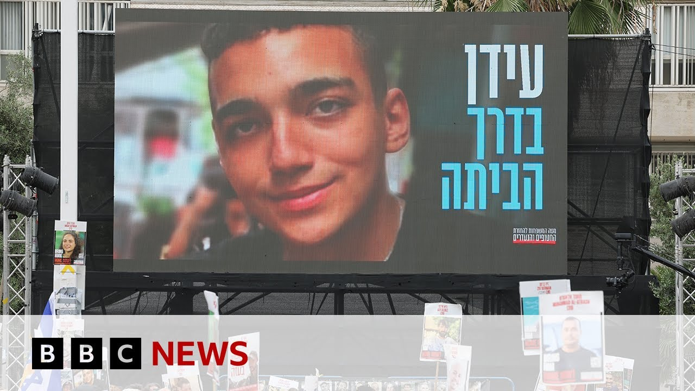

【哈马斯将释放美以双重国籍人质以推动加沙停火 | BBC新闻】
Summary: Hamas announces the release of Israeli-American hostage Eden Alexander to advance a Gaza ceasefire and allow humanitarian aid, following US-mediated talks in Qatar. Israel rejects Hamas's ceasefire demands for the remaining 59 hostages, many deceased, while Trump prepares for a Middle East visit amid stalled negotiations.
摘要： 哈马斯宣布释放以色列裔美国人质伊登·亚历山大，以推动加沙停火并允许人道主义援助进入，此前美方在卡塔尔进行了调解谈判。以色列拒绝哈马斯以停火换取剩余59名人质（多数已死亡）的要求，而特朗普在中东访问前谈判陷入僵局。

⏱️ Estimated Reading Time: 5 min
Hamas says it will release an Israeli American hostage, Eden Alexander, as part of efforts to reach a ceasefire deal in Gaza and allow humanitarian aid into the territory.
哈马斯表示将释放一名以色列裔美国人质伊登·亚历山大，作为推动加沙停火协议并允许人道主义援助进入该地区的一部分。
Well, the announcement follows direct talks between the group and the US administration in Qatar.
这一声明是在该组织与美国政府在卡塔尔进行直接谈判后发布的。
President Trump said on social media that he was grateful to those involved in the release, including the mediators Qatar and Egypt.
特朗普总统在社交媒体上表示，他对参与释放行动的相关方表示感谢，包括调解方卡塔尔和埃及。
Well, Israel is refusing Hamas's demands for a ceasefire in exchange for the remaining 59 Israeli hostages, many of whom are already dead.
以色列拒绝哈马斯以停火换取剩余59名以色列人质的要求，其中许多人已经死亡。
Mr. Trump is due to visit the Middle East this week.
特朗普先生将于本周访问中东。
Well, let's cross over to speak to our Middle East correspondent, Yoland Nell, who joins us from Jerusalem.
现在让我们连线我们在耶路撒冷的中东记者约兰德·内尔。
So, Yoland, what do we know about this potential release of Edan Alexander?
约兰德，关于伊登·亚历山大可能获释的消息，我们了解哪些情况？
Well, we've had no formal announcement of when uh this 21-year-old who was serving as an Israeli soldier uh on the 7th of October 2023 when he was captured in those Hamasled attacks.
目前尚未正式宣布这名21岁的以色列士兵（2023年10月7日在哈马斯领导的袭击中被俘）的具体获释时间。
Um we don't know exactly when he'll he'll be released, but the Israeli media are suggesting it could be as soon as noon local time.
我们尚不清楚他具体何时获释，但以色列媒体推测最快可能在当地时间中午。
That's 10:00 uh London time.
即伦敦时间上午10点。
We're expecting that um Hamas and mediators would meet once again uh this morning to finalize the details of this release.
我们预计哈马斯和调解方将于今早再次会面，敲定释放细节。
The family of Idan Alexander, they've been prominent campaigners among the hostage families are said to be flying from the US to Israel.
伊登·亚历山大的家人（人质家属中的活跃倡导者）据称正从美国飞往以色列。
They've called this the greatest gift imaginable.
他们称这是"能想象到的最好的礼物"。
And you know this comes after just one month ago um there had been a number of videos put out by Hamas showing their son alive and then we had Hamas saying in a a statement that the group that was holding him um had been lost contact uh with their handlers um and so that really raised question marks um after an Israeli strike reportedly whether Idan Alexander was still alive.
此前一个月，哈马斯曾发布多段视频显示他们的儿子还活着，但后来哈马斯声明称扣押他的小组与上级失联，这在以色列空袭后引发了对伊登是否仍存活的质疑。
Um, it also comes, of course, after we've had a sort of downgrading of expectations ahead of President Trump's Middle East visit, despite the fact that it's his first major foreign trip of his second term.
这也发生在人们对特朗普总统中东访问的预期降低之后——尽管这是他第二任期的首次重大外访。
That has really been um because o of the impass that there has been over um efforts to secure a new Gaza ceasefire and hostage release deal with Hamas saying they're only ready to give up the remaining captives they're holding.
这主要是因为与哈马斯达成新加沙停火和人质释放协议的努力陷入僵局——哈马斯称只愿以剩余俘虏（据信最多24人可能存活）换取全面协议，为结束战争铺路。
It's thought up to 24 could still be alive in exchange for a kind of comprehensive deal that would pave the way to the end of the war.
据信最多24人可能存活，哈马斯要求以全面协议作为释放条件，为结束战争铺路。
Meanwhile, we've had the Israeli government uh the Israeli prime minister uh really sticking to this idea that there must be a complete defeat over Hamas um in Gaza and that it's only military pressure that will bring back uh Israeli hostages.
与此同时，以色列总理坚持必须彻底击败加沙的哈马斯，并称只有军事压力才能带回以色列人质。
So there is now some increased positivity that there could be, you know, further steps.
因此现在对于可能取得进一步进展的乐观情绪有所增加。
We've had the Israeli prime minister's office though saying in statements this morning uh that all that it has given in exchange for Idan Alexander's uh uh prospective release is this promise of a safe corridor uh during the handover.
但以色列总理办公室今早声明称，为换取伊登·亚历山大的预期释放，以方仅承诺在移交期间提供安全通道。
Um and so really stressing that there have not been any concessions at this stage.
并强调现阶段未作出任何让步。
Yoland, as always, many thanks for your analysis.
约兰德，一如既往感谢你的分析。
Yoland Nell there joining us live from Jerusalem.
约兰德·内尔从耶路撒冷为我们带来的现场报道。
Thank you so much.
非常感谢。
And just a line coming from the AFP news agency which is quoting a source close to Hamas saying that a USIsraeli hostage to be released most likely Monday or Tuesday.
法新社援引哈马斯消息人士称，一名美以双重国籍人质很可能于周一或周二获释。
So uh we are just of course continuing to monitor that and we'll get the very latest from Yand as and when we get any more details.
我们将持续关注此事，并在获得更多细节后第一时间从约兰德处获取最新消息。